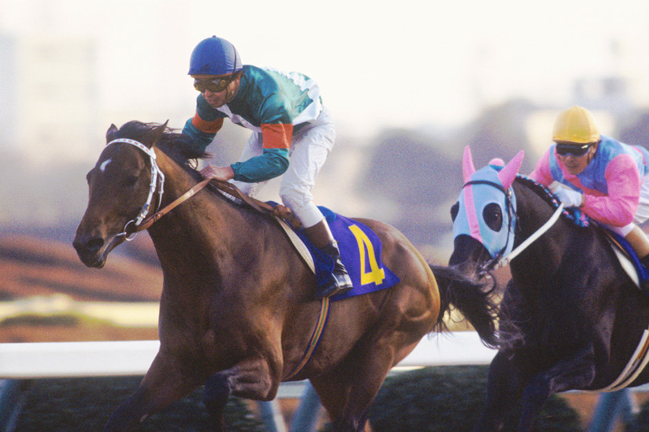

追溯日本赛马起源，了解从江户时代武士骑术到现代JRA竞技的完整演进历程
首次记载于《骏府记》的武士骑术表演，在静冈县举行，以马匹装饰与骑射为主要内容，是日本赛马文化的雏形。
由英国商人建立的日本首个现代赛马场，采用西式赛马规则，初期仅限外国人参与，1873年开放日本人参赛。
战后日本政府正式立法规范赛马运动，成立中央赛马会（JRA），确立东京、大阪等10大竞马场体系，现代赛马制度成型。
日本最大赛马场落成，可容纳7.2万名观众，引入电子屏幕与全球同步转播系统，推动赛马运动现代化。
《赛马娘》等文化作品诞生，带动赛马知识普及，2023年JRA线上观赛人数突破5000万，创历史新高。